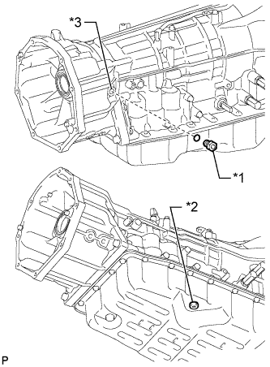
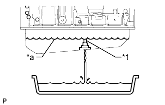

AUTOMATIC TRANSMISSION FLUID > REPLACEMENT |
| 1. REPLACE AUTOMATIC TRANSMISSION FLUID |
Lift the vehicle. [*1]
Remove the drain plug and gasket, and drain the ATF. [*2]
Temporarily install the gasket and drain plug. [*3]
|  |
Remove the refill plug and overflow plug. [*4]
| *1 | Refill Plug |
| *2 | Overflow Plug |
| *3 | Refill Hole |
|  |
Add fluid to the refill hole until it flows out of the overflow plug hole. [*5]
| *1 | Overflow Tube |
| *a | Specified Fluid Level |
Wait until the fluid flow slows and only drops come out. [*6]
Temporarily install the gasket and overflow plug. [*7]
Add fluid to the refill hole using the amount of fluid specified for removal and installation of the oil pan. [*8]
Temporarily install the gasket and refill plug to avoid fluid spillage. [*9]
Lower the vehicle. [*10]
Start the engine. [*11]
Slowly move the shift lever from P to S, and then back to P. [*12]
Allow the engine to idle for 30 seconds to warm it up. [*13]
Turn the engine switch off. [*14]
Repeat steps [*1] to [*14].
Repeat steps [*1] to [*2].
Install a new gasket and the drain plug.
Repeat steps [*4] to [*10].
Adjust the fluid level (Click here).
Lower the vehicle.
Operation complete.